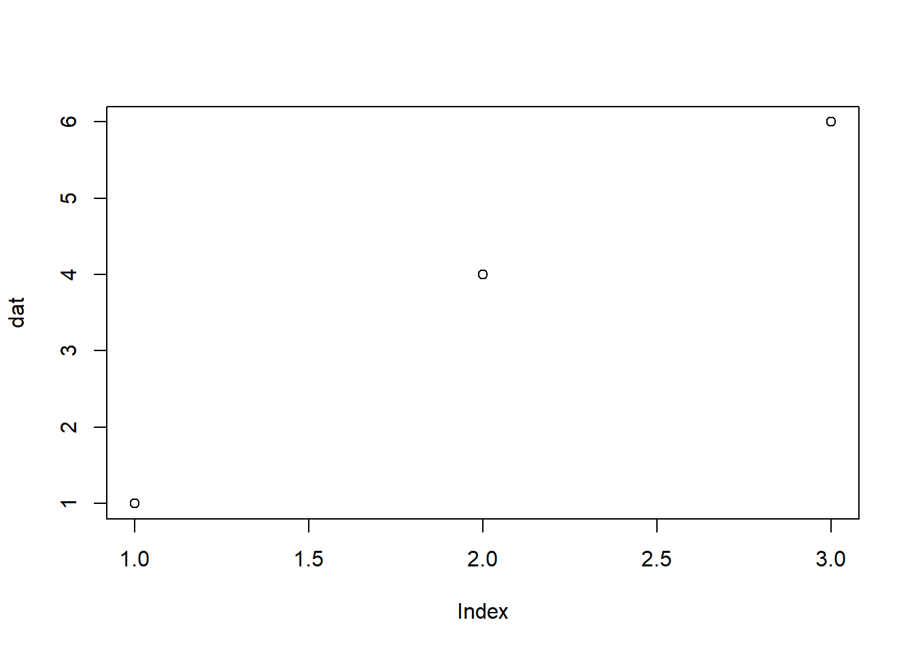

20 + 1[1] 2120 - 1[1] 193 * 4[1] 124 / 2[1] 22 ^ 2[1] 4本講義のタイトルにある「統計処理」は、研究の目的などに応じて得られたデータをまとめたり、可視化したり解析する行為を指す。言語に関する研究の手法は大きく分けて以下の2つがある。
「量的 = 一般化、質的 = 一般化をしない」という区別には注意が必要です。量的な研究でも、今週以降に説明するサンプリングにバイアスがある場合、「一般化」には制限がかかる場合があります。*寺沢先生の一連のXのポストが参考になります：https://x.com/tera_sawa/status/1970336158015279561
寺井は量的な研究しか経験がないため、本講義では量的な研究を行うことを念頭に統計処理の方法について講義を行う。しかし、それらが質的研究と全く関連がないわけではない（もし質的な研究に関心がある受講生の方がいたら、関連すると思う点を教えてください）。
量的研究では数量を扱うため、統計手法を用いて分析を行うことが多い。よって、量的研究を行う場合、統計に関する知識が必要不可欠。
データ収集の前に分析手法をある程度決めておく必要がある（Garbage in, garbage out. ）。使用する統計手法だけでなく、以下のことも十分に考えておくことが必要。
Rはプログラム言語の一種で、統計解析向けの言語。統計解析以外にもWebアプリを作ったり資料を作成したりすることも可能（この資料もRを使って作成しています）。Rは無料でインストール・使用することができる。
R言語をこの講義で扱う理由として、
Rに初めから備わっている機能だけで分析を行うことができる。しかし、世界中のRユーザーが開発した機能（パッケージ）を無料でインストールすることができる。これにより、最新の様々な分析を無料で行うことができる。
欠点として、パッケージはその都度アップデートが行われるため注意が必要である（アップデートにより以前と同じように動かないということも起こりうるため）。
Rもアップデートは行われる。
RをiPhone本体、パッケージをXやInstagramなどのアプリとイメージするとよい。
ExcelやSPSSなどコードを書かなくても統計解析を行うことができるソフトウェアは多い。しかし、ソフトウェアは無料のものばかりではなく、また実行したい分析を機能として持っていない可能性がある。近年では生成AIなどによって、プログラミングのハードルが以前よりも低くなったと考えられる。ソフトウェアで実行するよりも、プログラミング言語を駆使して分析を行う方が、統計以外のパソコンに関する知識獲得にもつながる。最初は「二階から目薬」のような気持ちになるかもしれないが、根気強く、授業者、友人、先輩、そしてAIに頼りながら取り組んでほしい。
Rのインストールの前に、ファイルの拡張子が見える設定に変更しましょう。
Windowsを使用している人で、Documents（ドキュメント）のパスにOne Driveが関係している人は教えてください。
20 + 1[1] 2120 - 1[1] 193 * 4[1] 124 / 2[1] 22 ^ 2[1] 4Rだけでも統計分析は可能だが、Rだけでは難しい。そこで、Rでの解析をサポートするする統合開発環境の中でRを使用する。
注意点として、統合開発環境だけでは分析ができず、Rのインストールも必ず行う必要がある。
はい。RStudioを使用してもOKです。RStudioは、Positronよりも長い歴史のある統合開発環境です。どちらも同じ会社（Posit社）が開発をしていて、PositronよりもRとの相性は良いです（Rに特化して作られている）。Rとの相性が良いことは、他の言語との相性が悪いという欠点もあります。Rを使うときはRStudio、Pythonを使うときはVisual Studio Codeといったように言語に応じて統合開発環境を変えないと不便なことがあったりします。プログラミング言語を学習し始めた方にとって、いきなりバイリンガルになれとは言いません。しかし、将来プログラミングに関する仕事や作業効率化などに興味がある方は特に、複数の言語を扱うことが必要とされます。Positronは多言語の統合開発環境であり、RとPythonを併用できます。また、RStudioよりもデータ分析に特化した機能を持っており、次世代の統合開発環境として注目されています。Rに特化した統合開発環境で学習してもらうと、他の言語への学習の意欲を奪うのではないかと考え2026年度からPositronに切り替えました。詳しい二つの比較は以下のスライドを参考にしてみてください。

Activity Bar：ファイル、Git、拡張機能、AIアシストなどを表示
Primary Side Bar：Activity Barの詳細。Activity Barで選んだものによって内容が異なる。
Editor：コードを記述する
Panel：コンソール（R本体）、ターミナルなどが表示される
Secondary Side Bar：作成した図などが表示される
テーマの変更：左下の⚙をクリック → [Themes] → [Color Theme]
フォントの大きさの変更：左下の⚙をクリック → [Settings] → [Text Editor] → [Font Size]
One DriveやGoogle Driveなどの自動同期以外の場所に作成するのがおすすめです。One DriveではないのであればDocumentsでもOKです。
この講義の数少ないお約束として、この講義に関連するファイルはすべて今から作成するフォルダの中に入れてください。フォルダの中で「Week1」や「material」など小分けにするのは良いです。
おすすめの場所第一位は、C:\Users\あなたのPCの名前です。C:\Users\あなたのPCの名前\Documentsでもいいです。このPathの中にOneDriveという文字が入っていてはいけません（おすすめしません）。
場所を決めたら、好きなフォルダ名をつけて作成してください。短い名前のほうがおすすめです（stats_2026など）。
Rでの分析で頻出するエラーは、No such directoryです。Rでの分析では、ExcelやCSVファイルを読み込んで作業します。「ファイルを読み込め！」とRに命令した際に、「見つからない( ；∀；)」というRの嘆きです。ディレクトリ📁（≒フォルダ）とは、場所のことです。Rはどこかのディレクトリいます。しかし、自分のいない部屋の情報はわかりません。読み込みたいファイルがある場合、Rがどこにいるかを確認し、読み込みたいファイルの場所を命令してあげる必要があります。このことからこの講義で配布するデータなどはすべて同じ部屋（フォルダ）に入れておくとよいです。
Rの出力結果を文字や写真などと一緒に出力できるもの（Word + Rみたいなもの）。
次世代のR Markdownです
[New] -> [New File….] -> [Quarto Document]
【パーツ１】YAML（YAML Ain’t Markup Language）ヘッダー：文章全体の体裁や情報を操作する
YAMLヘッダーは、RでもMarkdownでもないプログラム言語で記述
【パーツ２】コードチャンク：Rのコードを記述するところ
【パーツ３】ドキュメントチャンク：Markdownと呼ばれるプログラム言語で記述するところ
*, +, -のいずれかを入れる。文字との間を半角あけるのを忘れない。# 名古屋飯といえば
## ひつまぶし：*Hitsumabushi*
おすすめは以下のお店です。
- **ひつまぶし花岡**
- 場所：栄ショートカットキーが便利：[Ctrl] + [Alt] + [I]（Windows）、[Command] + [Option] + [I]（Mac）
このコードの中はR。Rで使う関数などを自由に指定できる
以下のチャンク内でないと、動かない = Rの命令として実行してもらえない
```{r}
```
dat <- c(1, 4, 6)
mean(dat)[1] 3.666667plot(dat)
以下は、旅行で使った食費の合計である。
hitsu <- 1300 * 2
miso <- 1000 * 2
total <- sum(hitsu, miso)## 食費の合計
- 以下は、名古屋旅行で使った食費の合計である。
- **注!** *hitsu*はひつまぶし、*miso*は味噌カツを表す
\```{r}
hitsu <- 1300 * 2
miso <- 1000 * 2
total <- sum(hitsu, miso)
\```作成したQuartoファイルは名前を付けて保存しましょう。
再度以下の点を確認してください
本講義の内容に関する簡単な小テストを行います。配布した資料を見返しておいてください。
自己紹介の文をQuartoで作成し、出力したHTMLファイルをTACTへ提出してください。以下の2項目を必ず入れてください。クラスメートと公開してもいい情報だけを入れてください！
名前、出身、研究科、自分の研究したいことを二文くらいでまとめる。
締め切りは今週の木曜日まで
質問等はTACTにお願いします。